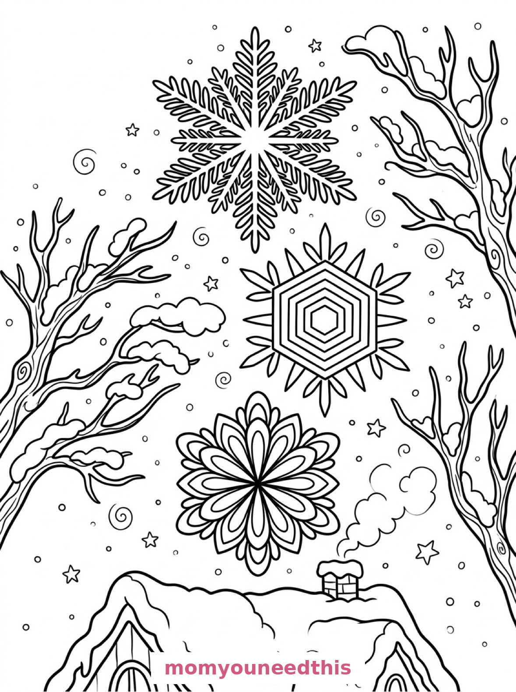
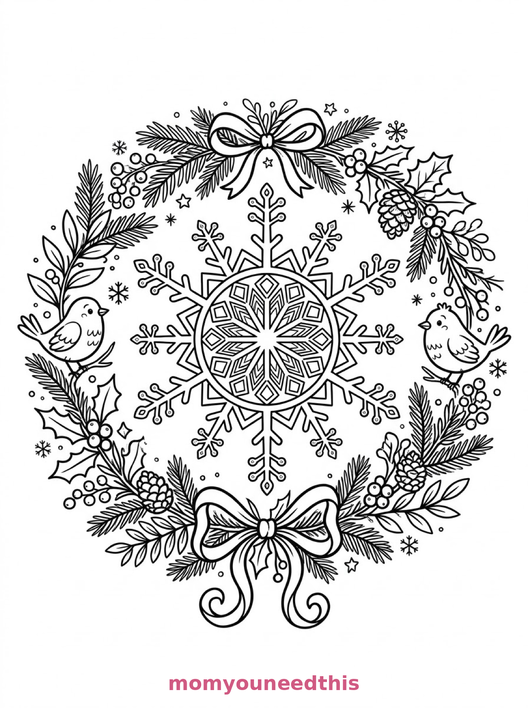

Free Snowflake Coloring Pages Giant Flake, Falling Flakes & Medallion Wreath Printables
These free snowflake coloring pages go big — one giant six-pointed snowflake with a winter border, three large falling flakes over a cottage roof, and an elaborate snowflake medallion in a greenery wreath. Download the set below, print at home on letter-size paper, and let the coloring fun begin. No signup needed.
Last updated: October 23, 2026
Quick Answer
Yes — this page has three free printable snowflake coloring pages: one very large snowflake framed by pine branches, holly and mittens; three large snowflakes of different designs falling over a snowy cottage; and a snowflake medallion inside a winter wreath with pinecones and two birds. Bold outlines and big spaces, made for little hands. Download, print on letter-size paper, and hand over the crayons — no signup, no cost.
At a Glance
- Ages: 3–8
- Pages: 3 free printables
- Format: Print at home, letter size
- Cost: Free, no signup
- Supplies: Crayons or markers
- Time: 10–20 minutes
❄️ One Giant Snowflake Coloring Page

🎨 Download Your Free Giant Snowflake Coloring Page
One very large six-pointed snowflake fills the centre of the page, its branching arms cut with diamond and teardrop shapes, rings of smaller snowflakes around it, framed by pine branches, holly leaves with berries and a pair of mittens on a ribbon — bold outlines, big spaces, zero signup.
⬇️ Download Free Giant Snowflake Page 🖨️ Print Giant Snowflake Page🎁 Free printable for preschoolers & kids
❄️ Three Falling Snowflakes Coloring Page

🎨 Download Your Free Falling Snowflakes Coloring Page
Three large snowflakes of different designs fall down the page — one with fern-like branching arms, one with hexagonal rings and pointed rays, one with layered petal shapes — above a snow-covered cottage roof and chimney, with bare tree branches reaching in — bold outlines, big spaces, zero signup.
⬇️ Download Free Falling Snowflakes Page 🖨️ Print Falling Snowflakes Page🎁 Free printable for preschoolers & kids
❄️ Snowflake Medallion Wreath Coloring Page

🎨 Download Your Free Snowflake Medallion Coloring Page
A single elaborate snowflake medallion with concentric rings of geometric ice-crystal patterns and six long arms ending in smaller snowflake tips, set inside a wreath of winter greenery with pinecones, ribbon bows and two small birds perched on opposite sides — bold outlines, big spaces, zero signup.
⬇️ Download Free Medallion Page 🖨️ Print Medallion Page🎁 Free printable for preschoolers & kids
More Coloring Pages
Tap any picture to open its theme page and download the free printable.


❄️ How To Use This Page
- Browse the three designs and pick the snowflake your child will love most.
- Tap download or print under that design — the file opens full-size, ready for letter-size paper.
- Print a couple of copies of the giant flake — no two snowflakes are alike, and no two colored versions should be either.
- Color together with crayons or markers, then cut one out for the window if you like.
❄️ Why Kids Love Snowflake Coloring Pages
Snowflakes are nature's mandalas: six arms, perfect symmetry, and patterns inside patterns. Coloring one is a rhythm — what you do on one arm, you repeat on the other five — and kids find that rhythm calming and deeply satisfying. It is pattern practice that feels like decorating.
These three designs are deliberately big. Instead of a flurry of tiny flakes, each page gives one, three or one medallion snowflake at a size little hands can actually work with — with the winter scenes (mittens, a cottage, a wreath) wrapped around them.
❄️ Meet the Three Snowflake Designs on This Page
The giant flake. One very large six-pointed snowflake filling the centre of the page with branching arms, diamond and teardrop shapes cut into each arm, and rings of smaller matching snowflakes around it, framed by a winter border of pine branches, holly leaves with berries, and a pair of mittens hanging from a ribbon at the bottom. It is the boldest page in the set — one flake, six arms, endless pattern choices.
The three falling flakes. Three large snowflakes of different designs arranged down the page like falling snow — the top one with fern-like branching arms, the middle one with hexagonal rings and pointed rays, the bottom one with layered petal shapes — surrounded by a cosy winter scene of a snow-covered cottage roof and chimney along the bottom and bare tree branches reaching in from the sides. It is the most varied page in the set: three flakes, three personalities.
The medallion wreath. A single elaborate snowflake medallion with concentric rings of geometric ice-crystal patterns, six long arms ending in smaller snowflake tips, set inside a wreath of winter greenery with pinecones, ribbon bows, and two small birds perched on opposite sides of the wreath, with tiny snowflakes scattered in the gaps between the leaves. It is the most detailed page in the set — a genuine mandala project for patient colorers.
✏️ Snowflake Coloring Tips
- Use the six-arm rule. Whatever color or pattern goes on one arm, repeat it on all six — instant symmetry, and the flake looks professionally designed.
- Ice colors glow on white. Pale blue, lavender, silver-gray and a touch of teal are the snowflake palette — light colors on white paper read as frost.
- Go dark around the medallion. On the wreath page, deep green leaves and red-brown pinecones make the pale medallion in the middle shine.
- Cut out a finished flake. The giant flake, cut carefully around its arms and taped to a window, is a winter decoration your child made from a coloring page.
❄️ Coloring Pages for Different Ages
For ages 3 to 4, start with the giant flake. Six big arms and chunky diamond shapes are all a little colorer needs, and the mittens at the bottom are a quick win.
For ages 5 to 6, the three falling flakes are the sweet spot. Three flakes in three styles means three fresh starts on one page, with a cozy cottage waiting at the bottom.
For ages 7 to 8, hand over the medallion wreath. The concentric rings, the six long arms and the wreath details reward slow, careful, symmetrical coloring — a real mandala session.
❄️ More Snowflake Fun After Coloring
Make a window blizzard: color and cut out a flake from each design, tape all three to one window, and let the light do the rest. Add a new flake every snow day and watch the storm build all winter.
For the rest of the season, the winter coloring pages bring a snowman, a sledding hill and a skating pond — and the snowman coloring pages are the flakes' natural landing spot.
🔗 More Free Printables You’ll Love
- Free Winter Coloring Pages A snowman, a sledding hill and an ice-skating pond to color.
- Free Snowman Coloring Pages Village, pond and postman snowmen to print and color.
- Free Penguin Coloring Pages A waddler, an igloo family and a sledding run to color.
- All Free Coloring Pages Browse every free coloring page on the site, organized by theme.
❓ Snowflake Coloring Pages FAQ
Are these snowflake coloring pages really free?
Yes — all three designs on this page are free original printables from MomYouNeedThis. Download them, print them at home, and color — no signup and no cost.
What ages are these coloring pages best for?
Kids ages 3 to 8 get the most from this set. The giant flake is the gentlest start for younger children, while the falling flakes and medallion wreath have the detail older kids enjoy.
How do I print a coloring page?
Tap the download button under the design you want, then print the file on regular letter-size paper. The print button opens the full-size page in a new tab if you prefer to print from there.
Are all snowflakes really different?
Yes — every real snowflake grows its own pattern, and the three designs here copy that idea: a branching giant flake, three falling flakes with fern, hexagonal and petal designs, and one geometric medallion. No two pages are alike.
Can I make a snowflake coloring book from these pages?
Yes — print all three designs, stack them in order, and staple along the left edge. Add a cover sheet with your child's name for a finished homemade snowflake coloring book.